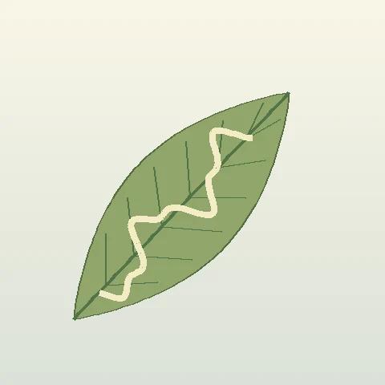

害虫-潜叶虫
浅色弯曲的潜道
这是与该表现相符的一种可能原因，请结合下方特征核对。

先看哪里
迎光查看弯曲痕迹是否夹在两层表皮之间，并看末端是否变宽。
可能原因与下一步
潜叶昆虫可形成这种取食通道。观察是否持续出现新潜道，少量受害通常可保留叶片。
浅色弯曲的潜道
这是与该表现相符的一种可能原因，请结合下方特征核对。

迎光查看弯曲痕迹是否夹在两层表皮之间，并看末端是否变宽。
潜叶昆虫可形成这种取食通道。观察是否持续出现新潜道，少量受害通常可保留叶片。